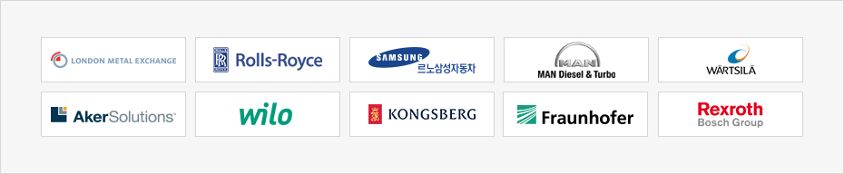

釜山の紹介
- Home
- 投資メリット
- 釜山の紹介
韓国第2の都市、釜山
口360万人が住む韓国第2の都市であり、世界に通じる韓国の玄関口でもある釜山は、温暖な気候と非常に美しい環境の中、情熱的で温かい気質が育まれた市民によって作られてきました。釜山は韓国戦争(朝鮮戦争)後に目覚しい発展を重ね、現在は世界的なスーパー港湾を有する海洋物流の中心都市、世界に通じるユーラシア大陸の玄関口としての役割を担う都市に成長しました。また、各種大規模国際イベントを成功裏に開催することにより、世界の主要都市にも引けを取らない位置に立ち、世界から人々が絶えず訪れる観光都市としてその名声を高めています。特に、釜山は映画・映像・コンテンツ・金融などの分野で未来を先取りする産業システムを構築し、環境に配慮するグリーンシティの一面も併せ持つ豊かな都市として躍進しています。

釜山の現況

釜山の産業構造
海洋・物流産業から先端映像産業、国際金融センターまで！釜山は文化と産業、観光とIT産業が地区別に特化された最適な都市であり、すべての産業が最も理想的に共存しています。釜山はサービス業を中心に製造業、建設業、農林漁業の順に発達した産業構造を有しています。

外国人投資企業の現況
釜山に投資している外国人投資企業は合計746社に及び、特にサービス分野の主要外国人投資企業としては、エンターテインメント(マーリン)・ホテル(セガサミー、東横イン)・IT(アクセンチュア)・エンジニアリング(インターグラフ)企業などがあります。

主要投資企業
